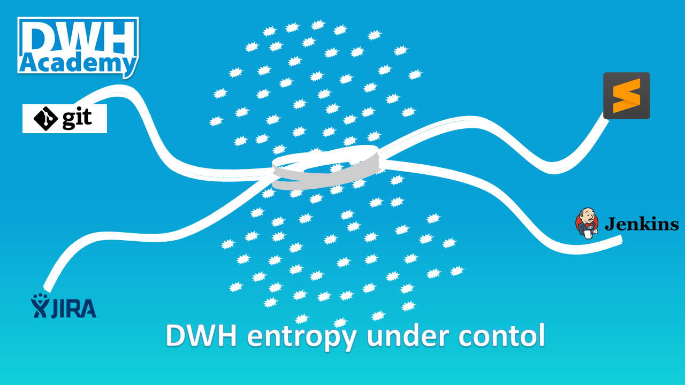

How to keep the DWH entropy increase sustainable
We were talking about why to care about the Entropy of the DWH in the prior post Entropy of the DWH systems. Let’s talk now about the ways how to keep the DWH entropy increase sustainable. We can never change the fact that the complexity of our DWH is going to grow over time. But we are fully responsible for the initial complexity of our solution and for creating the environment which can avoid rapid entropy increase in a short time.

DWH as a Universe
Well, we can never manage to start with Initial singularity, the state where all the mass of the Universe has been compressed into the infinitely dense center point. But it is crucial to start with a very good understanding of the data which we are going to load into our DWH. Lack of information about the processed data is the main reason for the unnecessary complexity of the DWH solution. This is the main rule for the long life of any solution, to make it simple in the beginning. Simplicity always comes from a perfect understanding.
Start with good architecture, see the post Proven DWH Design. An important rule to mention here is to keep data with high uncertainty in isolated data labs and never propagate them into integrated layer before gaining the necessary understanding.
Good understanding of data in the heads of your analysts and developers is better than nothing, but the best is to document and share the knowledge to the whole DWH team in well-organized Business definitions.
How to be in control
Creating a controlled development environment is the only way how to keep entropy increase of the DWH manageable in the long term. Everything starts with good versioning tool like GIT, extended by collaboration interface like Bitbucket integrated into other agile development tools like JIRA and Confluence. To goal is to have the code under the control and to enforce the end-to-end transparency of the development process as the default setup.
Code under control cannot be achieved only by a good code repository. Essential is already the way how the code is created. I personally prefer good text editor like Sublime Text where you are really in the control of the code creation not like with graphical GUI tools where the code is generated. Any GUI tool comes with some constraints and you can never avoid situations where instead of focusing on your goals you have to think about how to go around the constraints of the GUI tool. You can never keep the code as simple as possible without having full control over its creation.
The power of automation
We, humans, are creative beings. The creativity is our advantage, the motor of the progress. And progress cannot be stopped. But we need to control even the progress in the software development. It is definitely not a good development practice to use several different ways how to achieve the same thing. We need to define the patterns based on our best knowledge available at some point in time and consistently use just one pattern for doing one thing. To enforce this rule, limiting the space for human creativity, we use automation for all routine tasks. Automation is necessary to avoid an uncontrolled entropy increase in our DWH. The perfect tool for automation is the Jenkins server. We are going to talk about Jenkins jobs in some next post.
The main coding rules
Best solution is the simplest possible solution. Never add any functionality before it is really required. Do not try to predict the future. Setup the coding standards which the development team can agree on. Define your naming conventions, see the post Naming standards. Do not copy the same parts of the code to other places, encapsulate the shared logic in a library of common views. Keep the code simple and clear. Prefer more descriptive code, even when it is longer than the shorter code which is hard to understand. Perform regularly the refactoring of the whole solution. When the solution grows, new patterns put the old patterns into a different context, some parts become too complex, sometimes redundant. It’s is necessary to restructure the code to keep it in good shape regularly.
The magic formula for the long life of DWH
As I already mentioned in the first post Entropy of the DWH systems, the process of aging is driven by increasing entropy. This post is covering a few essential rules on how to setup a controlled development environment helping us to keep the DWH entropy increase sustainable, but the sad truth is there is no guarantee it’s gonna be enough. The strongest ally of the entropy increase is a lack of information. Our goal is to share all we know about building DWH, coming from general topics to practical examples. We identified the following areas to focus on in our posts: Main Topics. If you think there is some gap, please share your thoughts in the discussion below.
comments powered by Disqus